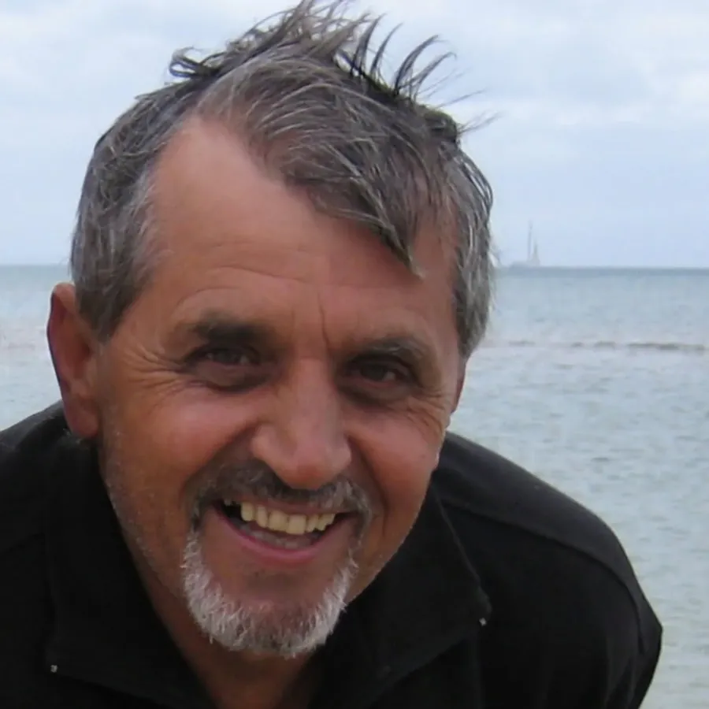

Courage, in their own words.
Personal experiences of people who have faced cancer with unwavering hope and determination, so no one has to walk this road alone.
Discover the extraordinary stories of individuals who have faced the challenges of cancer with unwavering hope and determination. These personal experiences offer powerful insights into the human spirit, showcasing courage, resilience and triumph. Through their stories, we aim to bring hope and support to those facing their own battles, reminding them that they are not alone in their journey.
Stories of hope.
 Gastro-oesophageal
Gastro-oesophagealA sudden Sunday-morning scare led to an early diagnosis, expert care and a story of resilience. “If my journey helps someone else see there’s light at the end, it’s worth telling.”
Read Ken’s story → Gastric
GastricA lifelong teacher who faced a total gastrectomy two days before her 60th birthday, and found strength in the HOPE Fund’s HIIT Cancer trial. “There is life after diagnosis.”
Read Joanne’s story → Pancreatic
PancreaticGeelong legend and former captain who faced pancreatic cancer with the same fight he brought to 270 games of football. His advocacy continues to inspire our mission.
Read Michael’s story → Oesophageal
OesophagealA retired nurse and marathon runner who faced oesophageal cancer with a “what happens next” attitude, and two years on is back running and going to the gym.
Read Michael’s story →
In loving memoryA man of quiet strength and deep generosity. In his final wishes, Peter asked that donations be made to The HOPE Fund to support vital research and patient care.
Honour Peter’s memory →Have a story of hope to share? Your journey could give someone else the courage to keep going.
Share your story →Every story needs a champion.
Behind every story of hope is a team of surgeons, researchers and nurses made possible by people like you. Your gift funds the research and care that writes the next chapter.
Registered charity with DGR status. Donations of $2 or more are tax-deductible.